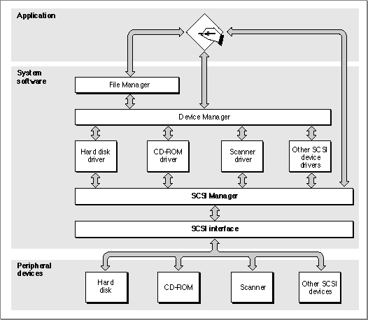

About the SCSI Manager
The SCSI Manager provides routines that allow Macintosh device drivers and other programs to communicate with SCSI peripheral devices using the SCSI protocol.The SCSI Manager is a software layer that mediates between device drivers or applications and the SCSI controller hardware in the Macintosh computer. In some cases, the amount of mediation is small. For example, the SCSI Manager
SCSIResetfunction does little except assert the reset signal on the SCSI bus. In other cases, a single SCSI Manager function may initiate a relatively complex series of actions.Figure 3-2 shows the relationship of the SCSI Manager to the Macintosh system architecture. The architecture consists of multiple layers: the application layer, the system software layer (which is composed of several subordinate layers), and the hardware layer.
Figure 3-2 The role of the SCSI Manager

Application programs usually rely on high-level services such as those provided by the File Manager, but may also call low-level services directly. The File Manager calls the Device Manager, which calls the appropriate device driver. SCSI device drivers do not control SCSI hardware directly; they use the SCSI Manager to communicate with SCSI devices.
Conformance With the SCSI Specification
The SCSI specification has been revised considerably since the first Macintosh SCSI implementation. For information about the SCSI standard as originally defined, see ANSI document X3.131-1986, Small Computer System Interface. Many of the features described in the newer SCSI-2 specification are supported by SCSI Manager 4.3. However, the original SCSI Manager predates these extensions.Due to hardware variations among Macintosh models, there are minor differences in the behavior of some SCSI Manager routines. These differences lie mostly outside the scope of the SCSI protocol. For information about these differences, see the description of the
SCSIGetfunction on page 3-32.All Macintosh computers support these aspects of the SCSI specification:
The following optional features of the SCSI specification are not supported by the original SCSI Manager:
- multiple targets
- as many as eight devices on the bus (the computer and up to seven peripherals)
- parity generation
- multiple SCSI buses
- multiple initiators on a single bus
- disconnect/reconnect
- parity error detection
- SCSI Manager 4.3 Note
- These features and other enhancements are supported by SCSI Manager 4.3.
Overview of SCSI Manager Data Structures
The SCSI specification and the Macintosh Operating System define a number of data structures for communicating with SCSI devices. These data structures fall into three categories:The command descriptor block and other data structures defined by the SCSI specification are not discussed in detail in this chapter. Refer to the SCSI specification for complete information about these structures. See "Using CDB and TIB Structures," beginning on page 3-17, for an example of how to send a CDB to a SCSI device.
- structures defined by the SCSI specification, such as command descriptor blocks and SCSI messages
- structures specific to the SCSI Manager, such as transfer instruction blocks and the 16-bit status word returned by the
SCSIStatfunction- structures required for the proper operation of SCSI disk drives with the Start Manager and the File Manager; for example, the driver descriptor map and the partition map
Although the driver descriptor map and the partition map are not used by the SCSI Manager, they must be present on all block devices compatible with the Macintosh Operating System. These structures are discussed in the following section.
A transfer instruction block (TIB) is a Macintosh-specific data structure that your program uses to pass instructions to the SCSI Manager. TIB structures are used to control data transfers, and for other purposes such as comparing data on a peripheral device with data in memory. TIB structures are passed as parameters to the SCSI Manager
SCSIRead,SCSIRBlind,SCSIWrite, andSCSIWBlindfunctions. For read operations, the TIB specifies a memory location where the data should be stored. For write operations, the TIB specifies the location of the data to be written.Although a transfer instruction block is data, not machine-executable code, it is analogous to code in that the data is interpreted and executed by the SCSI Manager in a manner similar to executing a program. The
SCSIInstrdata type defines a transfer instruction block.TYPE SCSIInstr = {transfer instruction block} RECORD scOpcode: Integer; {operation code} scParam1: LongInt; {first parameter} scParam2: LongInt; {second parameter} END;The first field of the transfer instruction block contains a transfer operation code. This code is not a command in the SCSI protocol, but rather an instruction to the SCSI Manager that directs the transfer of data across the SCSI bus after a SCSI command has been sent. The instruction set consists of eight operation codes that allow you to transfer data, increment a counter, and form iterative loops. See "SCSI Manager TIB Instructions," beginning on page 3-27, for details of the TIB instruction set.A sequence of TIB instructions is also known as a TIB pseudoprogram. Here is an example of a TIB pseudoprogram:
scInc $67B50 512 scLoop -10 6 scStopThis sample pseudoprogram consists of three TIB instructions that transfer six 512-byte blocks of data to or from address $67B50 (depending on whether these instructions are passed to aSCSIReador aSCSIWritefunction).The first TIB instruction transfers a 512-byte block of data from a starting address and then increments that address by the amount of data transferred. The second TIB instruction branches back to the first (by branching back 10 bytes, which is the size of a TIB instruction), and forms a loop that is executed six times (as specified by the second parameter). The third and final TIB instruction terminates the execution sequence and returns to the calling routine.
See "Using CDB and TIB Structures," beginning on page 3-17, for an example of how to use TIB instructions.
The Structure of Block Devices
This section describes the low-level organization of data on random-access storage devices such as SCSI hard disk drives. Although this information is presented in the context of the SCSI Manager, it applies to any type of block device that can be used by the Macintosh Operating System, regardless of the hardware interface.There are a number of ways to address data on block-structured storage devices such as disk drives. At the lowest level, a disk drive addresses a block by its cylinder, head, and sector number. The SCSI specification, however, conceals this level of detail. Instead, each block on a SCSI disk is assigned a number, beginning with 0 and extending to the last block on the disk. The SCSI specification describes these addresses as "logical" block numbers, but the SCSI Manager calls them physical block numbers because they correspond to a fixed location on the disk.
At an even higher level of abstraction, a device driver can define the mapping of physical addresses on a device to the logical addresses of a file system. This allows file systems to be independent of the characteristics of a particular device.
In the terminology of the SCSI Manager, a physical block refers to a specific, fixed location defined by the manufacturer of a SCSI device. A logical block refers to an abstract location defined by software. A partition is a series of contiguous logical blocks that have been allocated to a particular operating system, file system, or device driver. A disk can be divided into any number of partitions. Locations within these partitions are specified using logical block numbers, which are integer values ranging from 0 to the number of blocks in the partition.
The low-level organization of block devices is defined by two data structures: the driver descriptor record and the partition map. These structures are introduced in the following sections. See "Data Structures," beginning on page 3-23, for a complete description of the fields within these structures.
The Driver Descriptor Record
The driver descriptor record is a data structure that identifies the device drivers installed on a disk. To support multiple operating systems or other features, a disk can have more than one device driver installed, each in its own partition. The Start Manager reads the driver descriptor record during system startup and uses the information to locate and load the appropriate device driver.The driver descriptor record is always located at physical block 0, the first block on the disk. The driver descriptor record is defined by the
Block0data type.TYPE Block0 = PACKED RECORD sbSig: Integer; {device signature} sbBlkSize: Integer; {block size of the device} sbBlkCount: LongInt; {number of blocks on the device} sbDevType: Integer; {reserved} sbDevId: Integer; {reserved} sbData: LongInt; {reserved} sbDrvrCount: Integer; {number of driver descriptor entries} ddBlock: LongInt; {first driver's starting block} ddSize: Integer; {size of the driver, in 512-byte blocks} ddType: Integer; {operating system type (MacOS = 1)} ddPad: ARRAY [0..242] OF Integer; {additional drivers, if any} END;The driver descriptor record consists of seven fixed fields, followed by a variable amount of driver-specific information. The first field in the driver descriptor record is a signature, which must be set to the value of thesbSIGWordconstant to indicate that the record is valid (meaning that the disk has been formatted). The second field,sbBlkSize, specifies the size of the blocks on the device, in bytes. ThesbBlkCountfield specifies the total number of blocks on the device. The next three fields are reserved. ThesbDrvrCountfield specifies the number of drivers that are installed on the disk. The drivers can be located anywhere on the device and can be as large as necessary.The
ddBlock,ddSize, andddTypefields contain information about the first device driver on the disk. Information about any additional drivers is stored in theddPadfield, as an array of consecutiveddBlock,ddSize, andddTypefields.To select a particular device driver for loading at system startup, you use the Start Manager
SetOSDefaultfunction and specify a value corresponding to theddTypefield in the driver descriptor record.The Partition Map
The partition map is a data structure that describes the partitions present on a block device. The Macintosh Operating System and all other operating systems from Apple use the same partitioning method. This allows a single device to support multiple operating systems.The partition map always begins at physical block 1, the second block on the disk. With the exception of the driver descriptor record in block 0, every block on a disk must belong to a partition.
Each partition on a disk is described by an entry in the partition map. The partition map is itself a partition, and contains an entry describing itself. The partition map entry for the partition map is not necessarily the first entry in the map. Partition map entries can be in any order, and need not correspond to the physical organization of partitions on the disk.
The number of entries in the partition map is not restricted. However, because the partition map must begin at block 1 and must be contiguous, it cannot easily be expanded once other partitions are created. One way around this limitation is to create a large number of empty partition map entries when the disk is initialized.
To locate a partition, the Start Manager examines the
pmMapBlkCntfield of the first partition map entry. This field contains the size of the partition map, in blocks. Then, using the block size value from the sbBlkSize field of the driver descriptor record, the Start Manager reads each block in the partition map, looking for a valid signature in thepmSIGfield of each partition map entry record.The partition map entry record is defined by the
Partitiondata type.TYPE Partition = RECORD pmSig: Integer; {partition signature} pmSigPad: Integer; {reserved} pmMapBlkCnt: LongInt; {number of blocks in partition map} pmPyPartStart: LongInt; {first physical block of partition} pmPartBlkCnt: LongInt; {number of blocks in partition} pmPartName: PACKED ARRAY [0..31] OF Char; {partition name} pmParType: PACKED ARRAY [0..31] OF Char; {partition type} pmLgDataStart: LongInt; {first logical block of data area} pmDataCnt: LongInt; {number of blocks in data area} pmPartStatus: LongInt; {partition status information} pmLgBootStart: LongInt; {first logical block of boot code} pmBootSize: LongInt; {size of boot code, in bytes} pmBootAddr: LongInt; {boot code load address} pmBootAddr2: LongInt; {reserved} pmBootEntry: LongInt; {boot code entry point} pmBootEntry2: LongInt; {reserved} pmBootCksum: LongInt; {boot code checksum} pmProcessor: PACKED ARRAY [0..15] OF Char; {processor type} pmPad: ARRAY [0..187] OF Integer; {reserved} END;The first three fields in a partition map entry record are redundant, in that all entries in the partition map must contain the same values for these fields. ThepmSigfield contains the partition map signature, which is defined by the pMapSIG constant. ThepmSigPadfield is currently unused and must be set to 0. ThepmMapBlkCntfield contains the size in blocks of the entire partition map. Because this value is duplicated in every entry, you can determine the size of the partition map from any entry in the map.The remaining fields of the partition map entry record contain information about a particular disk partition. The
pmPyPartStartfield contains the physical block number of the first block of the partition. ThepmPartBlkCntfield contains the number of blocks in the partition. ThepmPartNamefield can contain an optional 32-character partition name. If this field contains a string beginning withMaci(for Macintosh), the Start Manager will perform checksum verification of the device driver's boot code. Otherwise, this field is ignored.The
pmParTypefield contains a string that identifies the partition type. Strings beginning withApple_are reserved for use by Apple Computer, Inc. The Start Manager uses this information to identify the type of device driver or file system in a partition. A bootable system disk must contain both anApple_Driverand anApple_HFSpartition. See page 3-26 for a list of the standard partition types defined by Apple.For file systems that do not begin at logical block 0 of the partition, the
pmLgDataStartfield contains the logical block number of the first block of file system data. ThepmDataCntfield specifies the size of the data area, in blocks. ThepmPartStatusfield is currently used only by the A/UX operating system.For device driver partitions, the
pmLgBootStartfield specifies the logical block number of the first block containing boot code. ThepmBootSizefield contains the size in bytes of the boot code. ThepmBootAddrfield specifies the memory address where the boot code is to be loaded, while thepmBootEntryfield specifies the address to which the Start Manager will transfer control after loading the boot code into memory. ThepmBootCksumfield holds the checksum of the boot code, which the Start Manager can compare against the calculated checksum after loading the code. ThepmProcessorfield is a string that identifies the type of processor that will execute the boot code.For more information about the startup process and SCSI devices, see the chapter "Start Manager" in Inside Macintosh: Operating System Utilities.